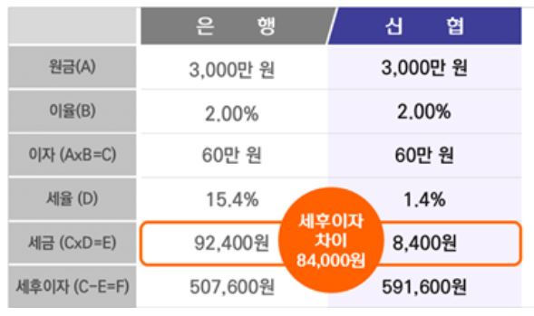
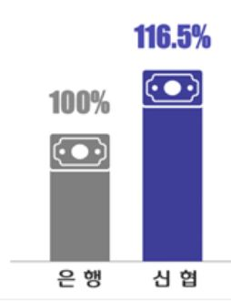

🔎 신협 비과세(저율) 예적금 VS 은행 이자 비교
✔ 예탁금액: 3,000만원 / 금리: 2.0% 적용시


🤷♀️이용고 배당이란(?)
아주대의료원 신협 이용 실적에 따른 실적 배당을 말하며, 대출금, 요구불(입출금)예금, 적금, 체크카드사용, 자동납부(이체)실적, 보험료 납입 실적 등이
실적에 반영되어, 사업수익에 따른 배당율에 따라 지급됨.
✔거래실적(항목)별 이용고 배당 산출 (2021년 지급기준 예)
▶ 대출금 : 연 평균잔액 * 약 0.23%
▶ 요구불(입출금)예금: 연 평균잔액 * 약 1.04%
▶ 적금 : 연 평균잔액 * 약 0.84%내외
▶ 체크카드 : 연 사용액 * 약 0.92%
▶ 자동납부(이체) : 월평균 건수 * 약 8,800원
✔ 이용고배당 지급시기: 매년 2월경 (정기총회 배당율 결정 후)